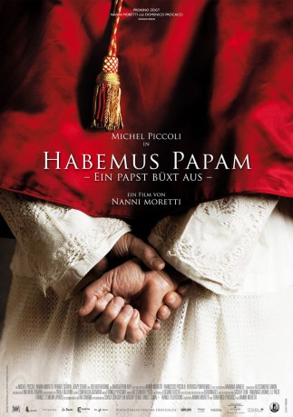

#1564 Habemus Papam - Ein Papst büxt aus
 
 IMDB-Wertung: 6.7 / 10
IMDB-Wertung: 6.7 / 10  Metascore: 64
Metascore: 64 
Habemus Papam – Wir haben einen Papst. Doch der hat leider keine Lust auf sein Amt, also heißt es Habemus Papam – Ein Papst büxt aus. Kardinal Melville (Michel Piccoli) ist zum neuen Papst gewählt worden, doch er fühlt von dieser unerwarteten Aufgabe vollkommen überfordert und weigert sich, auf den berühmten Balkon am Petersdom zu treten und sich der Weltöffentlichkeit zu zeigen. Während der Vatikan nach Ausreden sucht, um das Nicht-Erscheinen des Papstes zu erklären, wird ein Psychotherapeut (Nanni Moretti) geholt, der den Auserwählten von der Couch wieder auf die Beine bringen soll.
Jahr: 2011
Dauer: 102 Minuten
FSK:
Land: Italien Studio: Prokino FilmverleihTonspuren:
Untertitel: Deutsch,
Auflösung: 720p (1280x696) Größe: 3676 MB
Genre: Komödie, Drama
Regisseur:  Nanni Moretti
Nanni Moretti
Drehbuch: Nanni Moretti, Francesco Piccolo, Federica Pontremoli, Tom King, Jer Lujan
Soundtrack: Franco Piersanti
Darsteller:
 Michel Piccoli als Il papa
Michel Piccoli als Il papa- Jerzy Stuhr als Il portavoce
- Nanni Moretti als Lo psicoanalista
- Margherita Buy als La psicoanalista
- Leonardo Della Bianca als Giulio
- Massimo Dobrovic als Guardia svizzera
- Laurence Belgrave als Cardinale , uncredited
- Pope John Paul II als Himself , archive footage, uncredited
 Renato Scarpa als Cardinal Gregori
Renato Scarpa als Cardinal Gregori- Franco Graziosi als Cardinal Bollati
- Camillo Milli als Cardinal Pescardona
- Roberto Nobile als Cardinal Cevasco
- Ulrich von Dobschütz als Cardinal Brummer
- Gianluca Gobbi als Guardia svizzera
- Camilla Ridolfi als Bambina
- Dario Cantarelli als Attore
- Manuela Mandracchia als Attrice
- Rossana Mortara als Attrice
- Teco Celio als Attore
- Roberto De Francesco als Attore
- Chiara Causa als Attrice
- Mario Santella als Cerimoniere
- Toni Laudadio als Capo gendarmeria
- Enrico Ianniello als Giornalista
- Cecilia Dazzi als Mamma
- Lucia Mascino als Commessa
- Massimo Verdastro als Vaticanista
- Giulia Giordano als Ragazza al bar
- Francesco Brandi als Barista
- Giovanni Ludeno als Portiere
- Salvatore Miscio als Prete
- Salvatore Dell'Aquila als Medico
- Peter Boom als Cardinale
- Erik Merino als Cardinale
- Harold Bradley als Cardinale
- Jelle Bruinsma als Cardinale
- Alfredo Cairo als Cardinale
- Leonardo Maddalena als Ragazzo in autobus
- Mauro Casanica als Cardinale
- Somasiry Jayamanne als Cardinale
- Lorenzo Lucchi als
- Maurizio Mannoni als Himself
- Franco Moscon als Cardinale
- Riccardo Sinibaldi als Attore
Datei: X:\2011(G-M)\Habemus Papam - Ein Papst büxt aus (2011, FSK, 1280x696).mkv seit 22.07.2015
Festplatte: HD 2011(G-Z)
 Es gibt insgesamt 100 Filme in der Gruppe '2011(G-M)'
Es gibt insgesamt 100 Filme in der Gruppe '2011(G-M)'